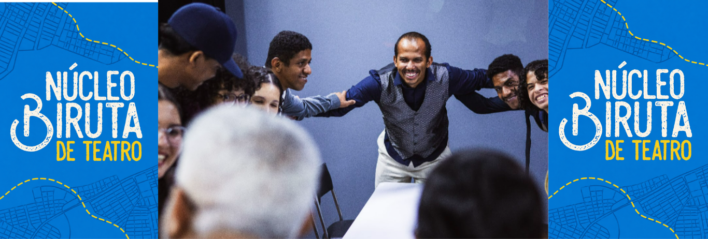
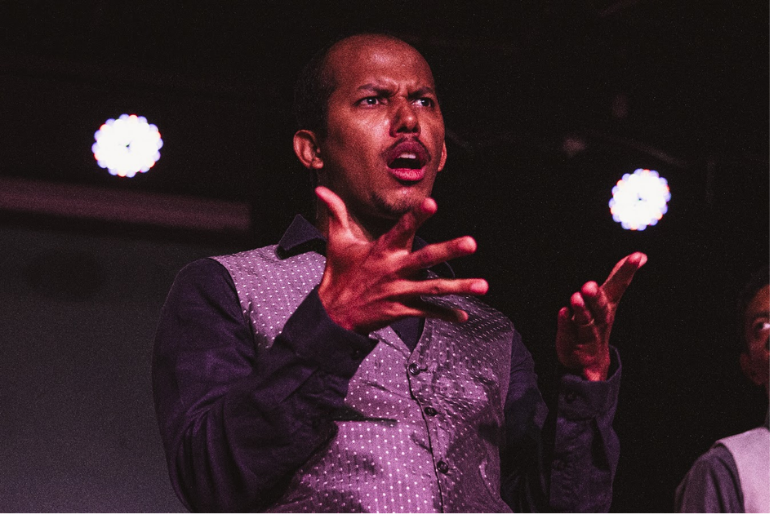
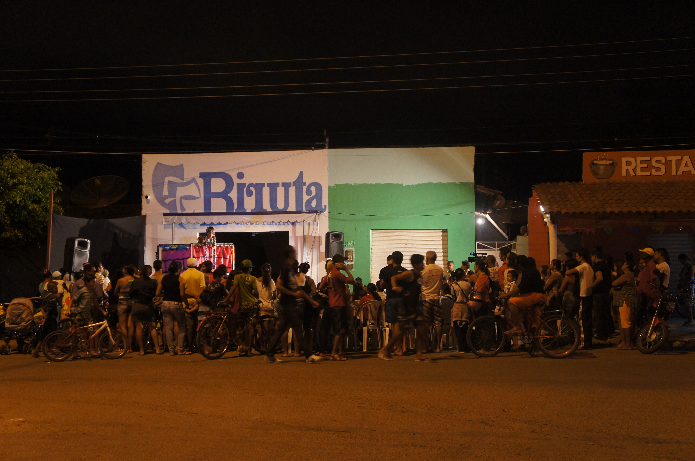
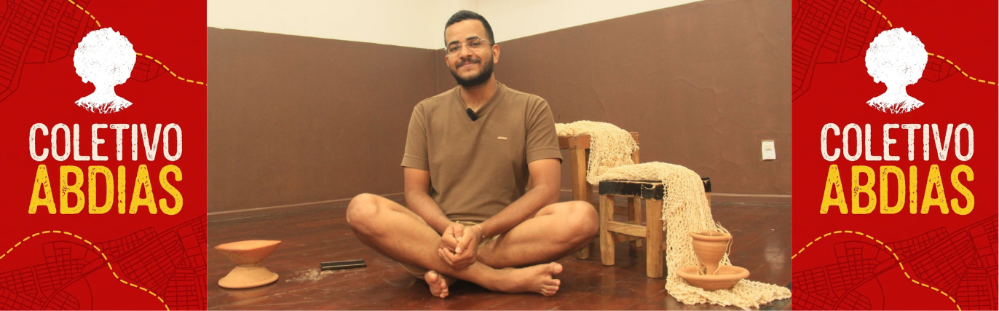
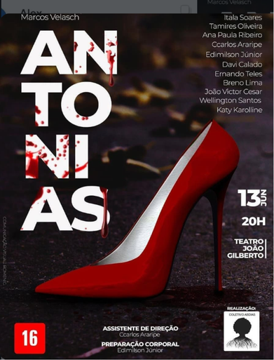
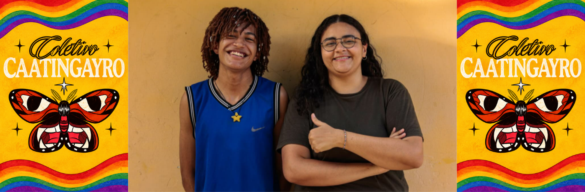
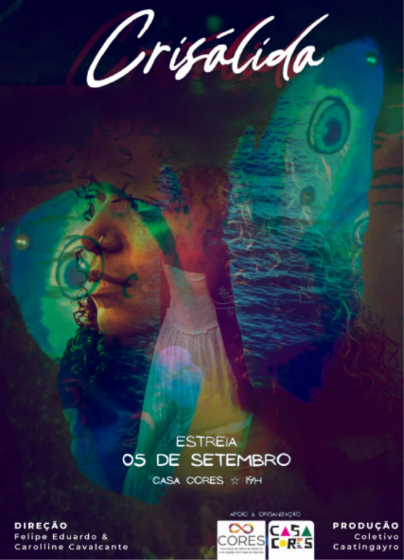

Nasci em Juazeiro, na Bahia, mas vivi a vida inteira em Petrolina, Pernambuco. Certa vez, durante a apresentação de um trabalho em Salvador, mencionei esse fato. Com certa desconfiança, alguém me perguntou se aquilo era uma piada. Respondi com outra pergunta: por que seria?
Petrolina e Juazeiro ficaram imortalizadas nos versos da canção Petrolina-Juazeiro, composta por Jorge de Altinho: “Petrolina, Juazeiro; Juazeiro, Petrolina. Todas as duas eu acho uma coisa linda”. A música traduz, em poucas palavras, a proximidade entre duas cidades que, embora pertençam a estados diferentes, compartilham muito mais do que uma paisagem. Ainda assim, para quem olha de fora, essa relação nem sempre parece tão evidente. Talvez porque as fronteiras políticas insistam em separar aquilo que a vida cotidiana aproxima.
Minha história entre essas duas margens não tem nada de extraordinário para quem cresceu por aqui. Meu nascimento, assim como o de tantas outras pessoas da minha geração, também atravessa um período de dificuldades na saúde pública de Petrolina, quando nascer em uma cidade e buscar atendimento na outra se tornou parte da realidade de muitas famílias.
É assim que se vive entre Petrolina e Juazeiro: cidades separadas por uma divisa estadual, mas aproximadas pelo Rio Opará, também conhecido como São Francisco, e por uma vida cotidiana que não cabe nas fronteiras dos mapas. Quando falta algo de um lado, atravessa-se a ponte para buscar do outro. Trabalha-se em uma cidade, estuda-se na outra e constroem-se afetos, histórias e pertencimentos que circulam entre as duas margens. Somos pernambaianos, PEBA's, como gostamos de dizer. E não há contradição nisso.
A arte produzida neste território também atravessa pontes, margens e fronteiras. Artistas, coletivos, grupos culturais e iniciativas independentes constroem suas trajetórias em meio a essas trocas, criando formas próprias de expressar o lugar onde vivem. Entre Petrolina e Juazeiro, a produção artística não se limita aos equipamentos culturais, aos palcos ou às galerias: ela também ocupa ruas, escolas, bairros periféricos, espaços comunitários e territórios onde a criação se torna uma possibilidade de encontro, reconhecimento e transformação.
Olhar para essa produção é também reconhecer que o Semiárido não se resume à paisagem da seca, à escassez ou às imagens historicamente associadas ao sertão. Há outras narrativas sendo construídas por quem vive aqui. Narrativas que passam pelo teatro, pela música, pelas artes visuais, pela dança, pelo audiovisual, pela literatura e por tantas outras linguagens. São expressões que reivindicam o direito de contar a própria história, questionar representações estabelecidas e produzir imagens diferentes sobre o Nordeste e sobre si mesmas.
Mas essas manifestações não surgiram de maneira isolada, tampouco começaram a existir quando passaram a receber reconhecimento institucional. Há uma trajetória de artistas, mestres, grupos, movimentos e espaços culturais que, em diferentes momentos, abriram caminhos para que outras formas de criação encontrassem lugar neste território.
Como nenhuma história começa exatamente onde a gente decide contá-la, compreender as expressões artísticas que existem hoje entre essas duas margens exige reconhecer os caminhos que vieram antes, as memórias que permanecem e as histórias que nem sempre encontraram espaço para serem narradas. É também uma oportunidade de questionar quem teve o direito de representar o sertão, quais imagens foram legitimadas e quais experiências permaneceram à margem dessas narrativas.
Por isso, peço licença a quem veio antes de mim. Esta reportagem nasce também da minha experiência de viver entre essas duas cidades, de reconhecer neste território parte da minha identidade e de compreender a arte como uma das maneiras pelas quais construímos nossas próprias formas de existir. Não se trata de contar uma história definitiva sobre a cultura de Petrolina e Juazeiro, mas de percorrer algumas das muitas histórias que a constituem, dando espaço a quem cria, resiste, experimenta e transforma o lugar que chama de casa.
Esta é uma tentativa de acompanhar a correnteza dessas narrativas: reconhecer suas origens, encontrar seus percursos e escutar as vozes que seguem movimentando a arte e a identidade no Vale do São Francisco.
À margem dos equipamentos oficiais:
as histórias que nem sempre encontraram espaço para serem narradas
A história cultural de Petrolina e Juazeiro não começa com a inauguração de um teatro, a criação de uma secretaria de governo ou a publicação de um edital. Antes que os equipamentos culturais passassem a integrar a paisagem das duas cidades, já existiam pessoas organizando festivais, montando espetáculos, criando cineclubes, promovendo encontros e inventando maneiras de fazer a arte circular pelo Sertão.
Parte dessa história não está nos prédios. Está nas lembranças de quem participou dos movimentos, nas fotografias guardadas, nos jornais antigos, nos documentos que sobreviveram ao tempo e nas narrativas transmitidas entre diferentes gerações de artistas.
Reconstruir essa trajetória exige olhar para além das instituições. É preciso compreender também as transformações de um território atravessado por disputas econômicas, mudanças políticas e diferentes formas de organização social. Afinal, enquanto o Vale do São Francisco era apresentado como uma região de potencial desenvolvimento, seus habitantes também construíam outras maneiras de interpretar, ocupar e representar o lugar onde viviam.
O TERRITÓRIO EM TRANSFORMAÇÃO
Nos anos 1970, Petrolina, em Pernambuco, e Juazeiro, na Bahia, passaram por transformações importantes. Durante a Ditadura Militar (1964–1985), o governo brasileiro intensificou projetos de modernização econômica, e o Vale do São Francisco passou a ocupar posição estratégica nas políticas de desenvolvimento nacional.
A irrigação e a expansão agrícola modificaram a paisagem, as relações de trabalho e a economia regional. Em 16 de julho de 1974, foi criada a Companhia de Desenvolvimento dos Vales do São Francisco e do Parnaíba (Codevasf), que sucedeu à Superintendência do Vale do São Francisco (Suvale). A instituição tinha como uma de suas principais frentes o aproveitamento econômico dos recursos hídricos e o desenvolvimento de projetos de irrigação.
O rio, que há gerações sustentava atividades como pesca, navegação e agricultura, também passou a ser compreendido como infraestrutura estratégica para a expansão econômica. Essa transformação, entretanto, não aconteceu sem conflitos.
Construção da Barragem de Sobradinho.
A construção da Barragem de Sobradinho, iniciada em 1971 e concluída em 1978, provocou o deslocamento compulsório de mais de 72 mil pessoas e a desapropriação de aproximadamente 26 mil propriedades. As antigas sedes de Casa Nova, Sento Sé, Remanso e Pilão Arcado foram atingidas pela formação do lago.
Para milhares de famílias, o desenvolvimento significou deixar para trás casas, terras, relações comunitárias e referências afetivas. A modernização que redesenhava o território também produzia rupturas que nem sempre apareciam nas narrativas oficiais sobre o progresso.
É nesse contexto que a memória se torna uma questão política. Preservar histórias, registrar experiências e garantir que diferentes grupos pudessem narrar suas próprias vivências era também uma forma de enfrentar o apagamento.
Memórias das mobilizações sociais na região.
A atuação de Dom José Rodrigues à frente da Diocese de Juazeiro e a organização de trabalhadores rurais, com a participação da Comissão Pastoral da Terra, criada em 1975 em âmbito nacional, integraram esse processo de mobilização social. As lutas pelo território, pela terra e pelos direitos das comunidades atravessavam a vida regional.
A cultura também estava inserida nesse cenário de disputas. Em um país submetido à censura e à vigilância política, artistas, estudantes e intelectuais precisavam encontrar caminhos para produzir, circular e compartilhar suas ideias.
A ARTE ANTES DOS EQUIPAMENTOS
Em Juazeiro, parte dessa movimentação pode ser recuperada por meio das memórias de Antônio Carlos Coêlho de Assis, conhecido como Coelhão, reunidas no livro Juazeiro de perto: uma mistura de arte, cultura e política, publicado em 2021.
Antônio Carlos Coêlho de Assis, conhecido como Coelhão.
Segundo Coelhão, a cultura em Juazeiro foi construída através das experiências de grupos, associações e movimentos que atuaram a partir da década de 1970. Entre eles está a Associação dos Universitários de Juazeiro (AUJ), cuja primeira formação surgiu em 1970.
A associação reunia estudantes juazeirenses que cursavam o ensino superior em cidades como Salvador, capital baiana. A proposta era fazer retornar à comunidade parte do conhecimento adquirido fora do município, por meio de projetos sociais, culturais e artísticos.
Festivais de música, exposições e gincanas e iniciativas que faziam parte desse esforço. O Festival São Franciscano da Canção, que hoje se chama Festival Edesio Santos e está na 28° edição e o Salão de Artes Plásticas PRO-ARTE, ambos realizados em 1972, também integraram essa movimentação.
No mesmo período, o Grupo Êxodus reuniu artistas de diferentes linguagens, entre atores, músicos, poetas e artistas plásticos. Mais do que produzir apresentações, essas iniciativas procuravam estabelecer relações entre a arte e os acontecimentos que atravessavam a cidade.
A movimentação não se limitava à realização de eventos. Tratava-se de construir um circuito cultural próprio, em uma época em que as oportunidades de formação e circulação artística no interior eram mais restritas.
Círculo Operário de Juazeiro.
Em março de 1980, o Círculo de Convivência Cultural lançou um manifesto que defendia a pesquisa, a experimentação, a troca de informações e o incentivo à produção literária. A iniciativa procurava aproximar diferentes áreas do conhecimento e criar um ambiente de convivência entre artistas e intelectuais.
Na década seguinte, a articulação entre cultura e participação política ganhou novas expressões. Em 1983, o Centro de Cultura e Debate passou a reunir artistas, professores e produtores culturais no Círculo Operário de Juazeiro. O espaço recebeu ensaios teatrais, exposições e discussões sobre os rumos da cidade.
Em 1984, a mobilização em defesa do Rio São Francisco também aproximou diferentes grupos. Depois de um episódio de mortandade de peixes associado ao lançamento de resíduos industriais no rio, o Movimento de Defesa do São Francisco organizou atividades de mobilização e conscientização ambiental.
Naquele mesmo período, o Cineclube Angarís ampliou as possibilidades de acesso ao audiovisual, promovendo sessões de filmes fora da programação comercial. O cinema se tornava também um espaço de encontro, formação de público e discussão.
A segunda formação da AUJ, entre 1983 e 1984, assumiu uma atuação mais explicitamente política e participou da articulação de um comitê suprapartidário pelas Diretas Já.
A cultura não estava isolada das questões que atravessavam a população. O teatro, a música, a literatura e o cinema também são formas de discutir a cidade, defender o território e construir espaços de participação.
MEMÓRIAS DO VALE EM CENA
A história das artes cênicas de Petrolina e Juazeiro possui uma característica particular: ela não respeita os limites administrativos que separam Pernambuco e Bahia. Artistas, grupos, professores e espectadores circulam entre as duas cidades, construindo uma cena que tem o rio como elemento de aproximação.
Thom Galiano.
Uma das pessoas que se dedica a investigar e preservar essa trajetória é Thom Galiano, diretor teatral, professor e integrante da Trup Errante. Sua atuação está ligada à formação de artistas e à pesquisa das artes cênicas no Vale do São Francisco.
Recentemente Thom desenvolveu um livro em torno do projeto Memórias do Vale em Cena onde reuniu vestígios dessa história: documentos, fotografias, entrevistas, cronologias e relatos de pessoas que participaram da construção do teatro regional.
Existem experiências que sobreviveram principalmente porque alguém guardou uma fotografia, registrou uma apresentação ou se dispôs a contar o que aconteceu.
Thom Galiano fala sobre a dimensão política presente em parte das experiências de formação teatral desenvolvidas na cidade. Ao falar sobre o espetáculo Andamos Todos Iguais, adaptação de Bailei na Curva, de Júlio Conte, ele lembra uma montagem que abordava a Ditadura Militar, desde o golpe até a redemocratização.
A memória política também atravessou outros trabalhos dirigidos por Galiano. Em Procura-se um corpo: Ação nº 3, desenvolvido pelo Núcleo de Teatro do Sesc Petrolina, histórias de pessoas perseguidas pela Ditadura Militar foram transformadas em experiência cênica e posteriormente reunidas em publicação.
“Acredito que a gente vive hoje uma guerra, inclusive em relação à narrativa”.
Thom Galiano
A observação ajuda a compreender por que recuperar a história cultural de uma região é também uma forma de intervenção no presente. Aquilo que se escolhe registrar, preservar ou deixar de fora interfere diretamente na maneira como uma sociedade reconhece sua própria trajetória.
QUEM PODE OCUPAR OS ESPAÇOS CULTURAIS?
Em novembro de 1986, Juazeiro ganhou um equipamento que se tornaria uma referência para a produção artística regional: o Centro de Cultura João Gilberto, inaugurado pelo Governo da Bahia.
A implantação do espaço representou um avanço na estrutura cultural do município. Ao longo dos anos, o Centro passou a receber diferentes linguagens artísticas e se tornou lugar de encontro para artistas de várias gerações.
Mas a existência de um equipamento público não significa, automaticamente, que todas as pessoas consigam acessá-lo ou se reconhecer nele. Localizado na região central de Juazeiro, o Centro impõe dificuldades de deslocamento para artistas e jovens que vivem em bairros mais distantes.
Para Odilon Neto, que integra o coletivo Abdias, formado majoritariamente por pessoas da periferia de Juazeiro, essa distância revela um problema que vai além do transporte: a concentração dos equipamentos culturais em determinadas áreas da cidade limita as possibilidades de criação e participação de quem vive em outros territórios.
O Centro de Cultura João Gilberto acaba sendo uma das poucas referências com uma infraestrutura mais completa. Por isso, Odilon defende que a política cultural também precisa chegar aos bairros, com a criação de espaços físicos equipados onde os jovens possam se reunir, desenvolver suas produções e construir suas próprias experiências artísticas sem depender exclusivamente do deslocamento até o centro da cidade.
Em Petrolina, essa questão também atravessou a relação entre artistas e espaços de apresentação. Para quem vivia em bairros distantes do centro, frequentar um teatro poderia envolver dificuldades de transporte, dinheiro e acesso à programação.
A distância não era apenas geográfica. Também envolvia a percepção de quem tinha o direito de ocupar determinados espaços e de quais manifestações eram reconhecidas como parte da vida cultural da cidade.
É uma questão que aparece na trajetória de Antônio Veronaldo, ator, diretor, dramaturgo e cofundador da Cia. Biruta de Teatro. Natural de Picos, no Piauí, o artista construiu em Petrolina uma trajetória diretamente relacionada à produção cultural nas periferias.
Em 2008, junto a Cristiane Crispim, participou da criação da Cia. Biruta, que estabeleceu suas atividades no bairro São Gonçalo, na zona oeste de Petrolina.
Antes de contar com um equipamento cultural de referência nas proximidades, o grupo precisou construir suas próprias condições de funcionamento. A Budega, um ponto comercial alugado e utilizado como primeira sede, tornou-se um lugar de ensaio, criação e convivência.
A decisão de desenvolver atividades no próprio bairro também significava questionar a ideia de que a produção artística precisava estar concentrada no centro da cidade.
Veronaldo conta que, durante uma audição para um dos primeiros espetáculos da companhia, perceberam que muitos dos interessados em participar eram moradores da mesma região periférica que os integrantes.
A percepção provocou uma mudança na maneira como o grupo compreendia sua própria produção. Uma das bases da investigação artística da Cia Biruta é que “a maior característica da cultura popular é ser local, de fazer parte de uma vivência comunitária”, afirma Veronaldo.
A partir dessa compreensão, a companhia passou a investigar referências culturais presentes no cotidiano do território: os corpos, as tradições populares, as histórias ribeirinhas e as experiências de quem vive às margens do São Francisco.
Essa pesquisa aparece em trabalhos como Chico e Flor contra os monstros da Ilha do Fogo, espetáculo criado a partir das lendas e tradições orais relacionadas ao rio. Ao falar sobre a montagem, Veronaldo explicou que as lendas serviam como ponto de partida para construir uma poética ribeirinha e estabelecer relações com questões contemporâneas, como a degradação ambiental e o desenvolvimento não sustentável.
A experiência da companhia fala sobre a periferia sertaneja como um lugar de criação, pesquisa, elaboração estética e produção de conhecimento.
A reivindicação por espaços culturais nas periferias também passa pela possibilidade de criar, manter e financiar iniciativas que nascem nesses territórios. Afinal, não basta que os artistas consigam chegar aos espaços existentes: é preciso que tenham condições de produzir, circular e dar continuidade ao próprio trabalho.
FINANCIAR A CULTURA, GARANTIR O ACESSO
A partir dos anos 1990, os mecanismos de financiamento cultural passaram por mudanças importantes no Brasil. A criação de programas estaduais de incentivo e fundos específicos ampliou as possibilidades de apoio a projetos artísticos, embora o acesso aos recursos continuasse condicionado a exigências administrativas e técnicas.
Na Bahia, o Fazcultura foi instituído em 1996, por meio de incentivo fiscal vinculado ao ICMS. Em Pernambuco, o Sistema de Incentivo à Cultura, que inclui o Funcultura, foi instituído pela Lei nº 12.310, de 19 de dezembro de 2002. Já o Fundo de Cultura do Estado da Bahia foi criado pela Lei nº 9.431, de 11 de fevereiro de 2005.
Esses mecanismos estabeleceram diferentes formas de participação do poder público no financiamento da produção cultural.
Entretanto, a existência de recursos não significa que todos os agentes culturais tenham as mesmas condições de disputá-los. Elaborar projetos, reunir documentação, manter uma estrutura administrativa e prestar contas exige conhecimentos e tempo que nem sempre estão disponíveis para coletivos independentes e grupos periféricos.
A profissionalização da gestão passou a integrar o cotidiano de quem desejava garantir a continuidade de suas atividades. Para muitos artistas, produzir cultura significava também aprender a lidar com formulários, inscrições, contrapartidas e processos burocráticos.
A institucionalização, contudo, não substituiu as práticas independentes. Muitos grupos continuaram produzindo com recursos próprios, parcerias, trabalho voluntário e ocupação de espaços comunitários.
O financiamento público tornou-se uma possibilidade de ampliação, mas não a origem de toda a produção artística regional.
Em Juazeiro, essa disputa também acontece no campo das políticas públicas. Se, de um lado, os coletivos reivindicam espaços onde possam desenvolver suas atividades, de outro, enfrentam entraves para acessar os recursos que deveriam fortalecer a produção cultural do município.
A MOBILIZAÇÃO DE NOVEMBRO DE 2026
Na manhã de 12 de novembro de 2026, artistas, produtores culturais e conselheiros ocuparam a Praça da Bandeira, no centro de Juazeiro (BA), e seguiram em cortejo até a sede da Secretaria de Cultura, Esporte e Lazer (Seculte), no Paço Municipal. O protesto ocorreu um dia depois de integrantes do Fórum Permanente de Cultura de Juazeiro e conselheiros da sociedade civil denunciarem, por meio de notas públicas e vídeos nas redes sociais, a paralisia administrativa na execução das políticas culturais do município.
REGISTRO DO CORTEJO / 12 DE NOVEMBRO DE 2026
A mobilização expôs um paradoxo enfrentado por quem produz arte no Vale do São Francisco: os recursos federais de fomento existem, mas podem encontrar obstáculos nos trâmites burocráticos locais antes de chegar aos coletivos. Se, nos anos 1970, o desafio era criar circuitos próprios diante da inexistência de estruturas municipais, em 2026 a disputa dos trabalhadores da cultura também passa por destravar a máquina pública, garantir a execução dos editais e fortalecer os espaços de participação social.
Na margem baiana do rio, o impasse institucional esbarra em dois entraves estruturais: o esvaziamento prático do Conselho Municipal de Política Cultural (CMPC) e a falta de operacionalização do Fundo Municipal de Cultura. Embora exista formalmente, o colegiado teve sua capacidade de atuação reduzida após a sanção da Lei Municipal nº 3.240/2024, especialmente em seu artigo 39, que deixou de assegurar expressamente o caráter deliberativo pleno do Conselho sobre o orçamento da pasta. Somam-se a isso o atraso na convocação de eleições para preencher cadeiras vagas da sociedade civil e a ausência de um Fundo Municipal de Cultura ativo e com CNPJ próprio — requisito apontado pelos representantes do movimento como necessário à adequação plena ao Sistema Nacional de Cultura e à gestão dos repasses federais, como os da Política Nacional Aldir Blanc (PNAB).
“Vamos estar mobilizados reivindicando a criação do Fundo de Cultura e do CNPJ para que possamos receber essas verbas da PNAB, cobrando que o Conselho de Cultura tenha autonomia para deliberar e fiscalizar o orçamento. E queremos eleições para o Conselho, para que os trabalhadores da cultura possam se eleger e ocupar esses espaços.”
Euri Mania, vídeo de convocação de 11 de novembro de 2026
Além do ato público no Paço Municipal, os coletivos lançaram um abaixo-assinado digital para reunir apoio da comunidade regional às reivindicações.
FALAS DOS MANIFESTANTES
Sem um Conselho com autonomia deliberativa e capacidade de fiscalização, o controle social sobre os recursos da cultura fica comprometido. A instância, prevista no Sistema Nacional de Cultura, deveria garantir a participação da sociedade civil nas decisões e no acompanhamento das políticas públicas. Quando esses mecanismos não funcionam plenamente, as decisões correm o risco de voltar a ser tomadas de cima para baixo, distantes das necessidades de quem produz cultura nos bairros.
A RESPOSTA DA PREFEITURA
Em nota oficial divulgada à imprensa na tarde de 12 de novembro de 2026 — mesmo dia do cortejo —, a Prefeitura de Juazeiro afirmou que está adotando providências administrativas para "garantir que o município não perderá recursos destinados ao setor". A reportagem confirmou que, naquela mesma quinta-feira (12), a Casa dos Conselhos publicou no Diário Oficial do Município o edital para a eleição complementar destinada a preencher as cadeiras vagas do Conselho Municipal de Política Cultural (CMPC) no biênio 2026/2028.
Por outro lado, duas reivindicações estruturais dos coletivos permaneceram sem solução imediata: segundo a administração, o pedido de alteração da Lei Municipal nº 3.240/2024 para assegurar o caráter deliberativo do colegiado ainda estava em análise na Procuradoria do Município. A nota também não apresentou prazos para a abertura do CNPJ próprio do Fundo Municipal de Cultura. No comunicado, a gestão citou eventos como o Festival Edésio Santos da Canção e a retomada do Festival Nacional de Teatro Wellington Monteclaro como demonstrações de investimento no setor.
OUTRAS FORMAS DE OCUPAR O TERRITÓRIO
Em Juazeiro, o Coletivo Abdias integra uma geração de iniciativas que colocam no centro da criação questões relacionadas à raça, à identidade e à presença negra nas artes cênicas.
Em Petrolina, a Cia. Biruta segue desenvolvendo atividades de criação e formação, tendo a periferia como parte fundamental de sua identidade artística.
Entre as experiências contemporâneas está também o Coletivo Caatingayro, formado por estudantes de Licenciatura em Artes Visuais da Universidade Federal do Vale do São Francisco. Sem uma sede fixa, o grupo desenvolve atividades nas duas margens do São Francisco, aproximando arte-educação, produção independente e vivências LGBTQIAPN+.
Encontros de desenho urbano, oficinas, feiras e exibições audiovisuais transformam ruas, praças e outros espaços públicos em lugares de aprendizagem e criação.
Essas experiências não representam uma ruptura completa com os movimentos das décadas anteriores. Existe uma continuidade entre os grupos que organizavam festivais, cineclubes e encontros culturais sem estruturas permanentes e os coletivos que hoje constroem suas próprias redes de colaboração.
O que muda são as linguagens, as pautas e as formas de organização. Se em outros momentos a articulação cultural esteve fortemente relacionada à redemocratização, à defesa do rio e às lutas sociais, as experiências contemporâneas também incorporam discussões sobre raça, gênero, sexualidade, identidade e direito à cidade.
Uma cartografia cultural do Vale do São Francisco precisa, portanto, ultrapassar os limites dos teatros, museus e centros culturais. Precisa localizar também os espaços independentes, as sedes improvisadas, os bairros onde acontecem as oficinas e os lugares que se transformam em palco por iniciativa de seus moradores.
UMA HISTÓRIA FEITA DE MUITAS VOZES
Olhar para a trajetória cultural de Petrolina e Juazeiro permite perceber que ela não se desenvolveu em uma linha contínua de conquistas institucionais. Sua história é feita de avanços, interrupções, disputas e reinvenções.
Entre os equipamentos públicos e os espaços improvisados, entre os projetos financiados e as produções independentes, existe uma rede de pessoas que sustentou a criação artística mesmo quando as condições eram insuficientes.
O trabalho de pesquisadores, artistas e memorialistas como Thom Galiano, as experiências de formação e criação conduzidas por Antônio Veronaldo e a memória preservada por pessoas como Coelhão ajudam a reconstruir partes dessa trajetória. São diferentes formas de registrar uma história que não cabe em uma única versão.
Talvez seja justamente por isso que ela precise ser contada a partir de muitas vozes: das pessoas que organizaram encontros sem saber se teriam público, dos artistas que produziram nos próprios bairros, dos grupos que precisaram inventar seus espaços e daqueles que encontraram na arte uma maneira de permanecer no território.
Antes de existir uma estrutura capaz de reconhecer, financiar e documentar essas produções, já havia gente criando. E, enquanto novos espaços são inaugurados, outros continuam sendo inventados.
A história cultural do Vale do São Francisco não está somente naquilo que foi construído. Está, sobretudo, nas pessoas que fizeram da criação uma maneira de ocupar o território e imaginar outras possibilidades de existência.
Fomento Cultural nas Margens do Velho Chico
Uma linha do tempo histórica e comparativa das políticas públicas,
fundos estaduais, leis municipais e recursos federais aplicados
em Petrolina (PE) e Juazeiro (BA).
ACOMPANHE A CORRENTEZA
↓
1975
Descentralização Estadual em Pernambuco (Fundarpe)
Contexto & Mecanismo: Criação da Fundação do Patrimônio Histórico e Artístico de Pernambuco (Fundarpe). Foi o marco inicial para organizar a descentralização dos recursos estaduais de cultura, tentando romper com a concentração na Região Metropolitana do Recife para alcançar o interior.
Chão da Cidade: Em 1975, o Sertão do São Francisco vivia as grandes transformações da infraestrutura hídrica e agrícola (construção de Sobradinho e projetos da Codevasf). A arte local existia sem formalização jurídica ou verba pública continuada, operando em grêmios, igrejas e manifestações comunitárias (reisados, quadrilhas e rodas de sanfona).
1986
O Primeiro Palco Oficial em Juazeiro
Governo: João Durval Carneiro (Bahia)
Equipamento: Inauguração do Centro de Cultura João Gilberto no bairro Santo Antônio (Rua da Stela), em Juazeiro.
Impacto: Juazeiro ganha seu primeiro grande equipamento público de difusão mantido pelo Governo da Bahia, tornando-se o coração da produção teatral e musical da margem baiana.
1991
A Lei Rouanet e o Mecenato Federal
Governo: Fernando Collor de Mello
Mecanismo: Instituição da Lei Federal nº 8.313/91 (Lei Rouanet), abrindo a via de captação por renúncia fiscal e pelo Fundo Nacional da Cultura (FNC) para empresas da região.
1995
O Teatro Dona Amélia em Petrolina
Governo: Fernando Henrique Cardoso (Federal) / Miguel Arraes (Pernambuco)
Equipamento: Inauguração do Teatro Dona Amélia no Sesc Centro, em Petrolina.
Impacto: Torna-se o polo central de difusão das artes cênicas e de formação técnica em elaboração de projetos no Sertão de Pernambuco.
1996
O Primeiro Mecanismo da Bahia (Fazcultura)
Governo: Paulo Souto (Bahia)
Mecanismo: Criação do Programa Estadual de Incentivo ao Patrocínio Cultural (Fazcultura - Lei nº 7.015/96) via abatimento no ICMS.
Gargalo: Por exigir captação direta com empresas, o recurso concentrava-se majoritariamente na capital baiana.
2002
A Revolução do Repasse Direto (Funcultura-PE)
Governo: Jarbas Vasconcelos (Pernambuco)
Mecanismo: Instituição do Fundo Pernambucano de Incentivo à Cultura (Funcultura - Lei nº 12.300/02).
Impacto em Petrolina: Mudança de chave histórica: o fundo passa a repassar recursos diretos do ICMS via editais públicos sem exigir intermediação privada nem busca de patrocínio empresarial, impulsionando a formalização dos grupos locais com CNPJ.
2005
O Fundo de Cultura da Bahia (FCBA) e os Editais Territoriais
Governo: Paulo Souto / consolidação na gestão Jaques Wagner (Bahia)
Mecanismo: Criação do FCBA (Lei nº 9.431/05), permitindo a injeção de verba direta via editais públicos e garantindo cotas específicas para o Território de Identidade do Sertão do São Francisco.
2005 - 2010
Cultura Viva, Pontos de Cultura e Editais Funarte
Governo: Luiz Inácio Lula da Silva (Federal)
Mecanismo: Consolidação da Política Nacional Cultura Viva e difusão dos prêmios federais da Funarte (Myriam Muniz, Klauss Vianna, Pixinguinha).
Impacto no Território: Coletivos das periferias e da zona rural de Petrolina e Juazeiro passam a ser reconhecidos como Pontos de Cultura, recebendo convênios diretos para manutenção de sedes e equipamentos.
2010
Legislação Municipal em Juazeiro
Governo: Isaac Carvalho (Juazeiro)
Mecanismo: Regulamentação da Lei Municipal de Incentivo à Cultura (Lei nº 2.158/10), estruturando editais locais para feiras literárias, manifestações tradicionais e quadrilhas.
2013 - 2015
Fundo de Petrolina e a Entrega do CEU das Águas
Governo: Julio Lóssio (Petrolina) / Isaac Carvalho (Juazeiro) / Dilma Rousseff (Federal)
Equipamentos: Entrega dos Centros de Artes e Esportes Unificados (CEUs das Águas), programa de infraestrutura do Governo Federal (PAC 2) que viabilizou equipamentos culturais nas periferias de ambas as cidades:
Em Petrolina: Erguido no bairro Rio Corrente (zona oeste), abrigando o Cineteatro Massangano.
Em Juazeiro: Erguido no bairro Tabuleiro, estruturando a Praça CEU.
Impacto: Ocupação contínua por grupos independentes (como a Cia Biruta, que passou a gestar e realizar suas formações no Cineteatro Massangano), além da descentralização de oficinas, percussão, artes visuais e difusão artística para fora dos eixos centrais de Petrolina e Juazeiro.
Mecanismo: Injeção direta de recursos emergenciais federais repassados a estados e municípios para manutenção de espaços e prêmios a artistas durante a pandemia.
Mecanismo: Maior aporte direto da história cultural do país (Lei Complementar nº 195/2022). Petrolina recebeu cerca de R$ 2,8 milhões e Juazeiro aproximadamente R$ 1,9 milhão, priorizando o audiovisual e cotas étnico-raciais/periféricas.
2024 - 2026
Política Nacional Aldir Blanc (PNAB)
Governo: Luiz Inácio Lula da Silva (Federal) / Gestões Estaduais e Municipais
Mecanismo: Garantia de repasses anuais contínuos até 2027 para editais locais, reformas de equipamentos e fortalecimento da Rede de Pontos de Cultura.
Links Oficiais e Fontes de Informação
Para consulta, checagem de editais e acervo de dados sobre o fomento em Pernambuco, Bahia e âmbito Federal:
Pernambuco & Petrolina
Portal Fundarpe / Funcultura: https://www.fundarpe.pe.gov.br (Informações sobre a legislação do Funcultura, resultados de editais e acervo histórico de Pernambuco)
Mapa Cultural de Pernambuco: https://www.mapacultural.pe.gov.br (Mapeamento georreferenciado de coletivos, Pontos de Cultura e projetos aprovados em Petrolina)
Prefeitura Municipal de Petrolina (Cultura): https://petrolina.pe.gov.br (Publicações dos editais locais da Lei Paulo Gustavo, PNAB e editais municipais)
Bahia & Juazeiro
Secretaria de Cultura do Estado da Bahia (Secult-BA): http://www.cultura.ba.gov.br (Diretrizes do Fazcultura, do Fundo de Cultura da Bahia - FCBA e Editais Territoriais)
SIIC - Sistema de Informações Culturais da Bahia: http://siic.cultura.ba.gov.br (Dados sobre os proponentes e projetos contemplados no Território Sertão do São Francisco)
Prefeitura Municipal de Juazeiro (Cultura): https://www.juazeiro.ba.gov.br (Editais municipais, publicações da Lei Paulo Gustavo e conselho local)
Âmbito Federal
Ministério da Cultura (MinC) / PNAB / Paulo Gustavo: https://www.gov.br/cultura (Painéis de dados sobre os repasses das leis federais e Política Nacional Cultura Viva)
Fundação Nacional de Artes (Funarte): https://www.gov.br/funarte (Editais nacionais, prêmios históricos e programas de apoio a ações continuadas)

NÚCLEO BIRUTA DE TEATRO:
Os caminhos de Fernando de Souza na arte
Fernando de Souza nasceu surdo em uma família de ouvintes. Único surdo entre os familiares, cresceu em um ambiente no qual a comunicação e o acesso à língua exigiram caminhos próprios. Parte de sua formação aconteceu em escolas para surdos de Natal (RN), onde teve contato com uma educação bilíngue. Mais tarde, encontrou nas artes uma possibilidade de ampliar suas formas de expressão e de estabelecer outras relações com o mundo.
A descoberta de uma dessas possibilidades aconteceu pelas redes sociais. Ao assistir a um vídeo de Visual Vernacular (VV), Fernando se encantou com aquela linguagem, que transforma o corpo em instrumento de criação e narrativa. Movimentos, expressões faciais, gestos e mudanças de ritmo constroem imagens e situações sem depender da palavra falada. Para ele, o encontro representou uma mudança na maneira de se expressar: passou a explorar os gestos com mais intensidade, comunicar emoções e experimentar outras formas de contar histórias.

Desenvolvida no contexto da cultura surda, a Visual Vernacular é uma linguagem performática que explora as possibilidades visuais e espaciais do corpo. Associada à trajetória do ator e poeta surdo norte-americano Bernard Bragg, sua construção utiliza recursos que remetem à linguagem cinematográfica, como aproximações e afastamentos de câmera, mudanças de perspectiva, cortes de cena e câmera lenta. O resultado é uma narrativa visual em que o corpo não apenas acompanha a história: ele próprio a constrói.
Essa relação com o movimento encontrou espaço para se desenvolver no Núcleo Biruta de Teatro (NBT), braço formativo da Cia Biruta de Teatro. Foi durante as oficinas e encontros realizados entre 2024 e 2025 que conheci Fernando. O Núcleo também foi a primeira iniciativa artística que conheci em Petrolina: meu primeiro encontro real com o fazer coletivo e com a arte produzida nas periferias da cidade. Mais do que um espaço de formação técnica, tornou-se uma ponte para outras vivências.
No Cineteatro Massangano, Fernando encontrou uma prática teatral que dialogava com sua experiência artística. A corporeidade é uma dimensão importante do trabalho desenvolvido pela Cia Biruta e por seu núcleo formativo. Em Corpo em Redemoinho: Performances decoloniais no semiárido pela poética da Cia Biruta de Teatro, a cofundadora da cia e oficineira do NBT Cristiane Crispim, discute aspectos dessa investigação, na qual o corpo ocupa lugar central na construção da cena. Nas oficinas, essa pesquisa aparece em exercícios, jogos e experimentações que exploram movimentos, gestos e possibilidades expressivas.
Para Fernando, há um encontro entre essas duas experiências. A Visual Vernacular, que já fazia parte de sua trajetória, encontra no teatro novas possibilidades de criação. Ao mesmo tempo, sua presença amplia as referências dos demais participantes. A troca acontece nos dois sentidos: enquanto aprende com os colegas, Fernando compartilha suas vivências e apresenta outras maneiras de perceber o corpo, construir sentidos e contar histórias.
A experiência também é atravessada pela acessibilidade. Fernando relata sentir-se acolhido no Núcleo Biruta e destaca a presença de uma intérprete de Libras como fundamental para sua participação nas atividades. Segundo ele, o núcleo é o único espaço de formação teatral de Petrolina que oferece esse recurso. A interpretação permite acompanhar as orientações, participar das conversas e integrar os processos coletivos, criando condições para que sua experiência não fique restrita à observação.
A presença de Fernando, entretanto, não deve ser entendida apenas como a de alguém que precisa de adaptações para acompanhar uma atividade pensada por e para ouvintes. Ele também participa da construção do ambiente artístico, compartilha conhecimentos e transforma as experiências do grupo.
A história de Fernando ajuda a compreender uma questão que ultrapassa as paredes do Núcleo Biruta. No Brasil, embora o direito à participação cultural esteja previsto na legislação, o acesso de pessoas surdas a espaços de formação e fruição artística ainda enfrenta barreiras. A ausência de intérpretes, de conteúdos em Libras e de propostas que considerem a cultura surda limita a participação desse público em atividades culturais.
É importante, nesse debate, distinguir a deficiência auditiva da experiência cultural e linguística da comunidade surda. Embora os termos estejam relacionados, nem todas as pessoas com deficiência auditiva se identificam como integrantes da comunidade surda, que se reconhece como minoria linguística e cultural, tendo a Libras como elemento central de sua identidade e de suas formas de interação.
Segundo a Pesquisa Nacional de Saúde (PNS) de 2019, divulgada pelo Instituto Brasileiro de Geografia e Estatística (IBGE) em 2021, cerca de 2,3 milhões de brasileiros com dois anos ou mais apresentavam deficiência auditiva severa. Já o Censo Demográfico de 2010 registrou aproximadamente 9,7 milhões de pessoas com algum grau de dificuldade para ouvir. Os levantamentos utilizam critérios distintos e não representam, necessariamente, o número de pessoas que se identificam como surdas ou que utilizam a Libras.
O direito à participação cultural está assegurado pelo artigo 42 da Lei Brasileira de Inclusão (Lei nº 13.146/2015), que prevê o acesso das pessoas com deficiência a bens culturais em igualdade de oportunidades. Na prática, porém, a existência da legislação não garante que equipamentos e projetos estejam preparados para receber diferentes públicos. A acessibilidade comunicacional ainda depende, muitas vezes, de iniciativas específicas e de recursos que nem sempre estão disponíveis de forma permanente.
No campo da formação artística, a ausência de acessibilidade também determina quem consegue permanecer nesses espaços. Oficinas, grupos de teatro e projetos independentes nem sempre conseguem manter intérpretes de Libras ou oferecer atividades bilíngues. Assim, a participação de pessoas surdas acaba dependendo da duração de um projeto, da disponibilidade de recursos ou de iniciativas isoladas. O que deveria fazer parte da estrutura da formação artística passa a ser uma possibilidade temporária.
É nesse contexto que a experiência do Núcleo Biruta se insere. Ao oferecer interpretação em Libras e receber a comunidade surda em suas atividades, o grupo permite não só a participação nas oficinas, mas também abre espaço para que outras formas de expressão atravessem o processo de criação.
Nas performances de Visual Vernacular, Fernando faz do corpo um meio de narrar. Gestos, movimentos e expressões compõem histórias sem depender da palavra falada. No encontro com o teatro, essa linguagem passa a dividir o espaço com outras formas de criação. Seu percurso deixa uma questão para a formação artística: quantas maneiras de contar uma história ainda permanecem fora de cena porque não encontram espaço para existir?
Leituras dramatizadas 2024 — Fernando de Souza
Galeria — NBT


COLETIVO ABDIAS
o teatro negro de Juazeiro e a disputa por contar o Sertão
Odilon Neto tem duas rotinas que não se cruzam no calendário e se encontram na cabeça dele. Em uma, há plantões de enfermeiro em hospital. Na outra, há ensaios. Mora no Itaberaba, bairro da periferia de Juazeiro, na Bahia, e como muitos artistas independentes do interior faz teatro quando o emprego deixa: encaixa horário, deslocamento e compromisso até sobrar uma sala e um grupo de pessoas disponíveis ao mesmo tempo.
O que ele faz nessa sala, diz, é elaborar experiências, investigar a própria identidade e construir outras possibilidades de representação. A frase é abstrata. O que a torna concreta é a história de um coletivo que não tem sede, que ensaia em casas e associações de moradores e que fez sua última grande mostra sem dinheiro público.
A relação de Odilon com o teatro começou no ensino médio, numa escola estadual de Juazeiro que tinha oficinas de teatro no turno da noite. Ele não conseguiu se matricular. Ficava por perto, acompanhava ensaios, conversava com os estudantes.
O interesse ficou guardado até 2017. Naquele ano, ele viu nas redes sociais uma convocatória do ator e diretor Marcos Velásquez para uma oficina de iniciação teatral, promovida por um coletivo de teatro negro. Inscreveu-se. Podia ter sido só uma experiência de formação e virou o ponto de partida de uma trajetória que, segundo ele, continua em construção.
Pelas lembranças de Odilon, o Coletivo Abdias surgiu em 2017, a partir da articulação de Marcos Velásquez, Márcio Sales, Edmilson e Carlos Araripe, o Carlinhos. A oficina deu origem a uma mostra aberta ao público e depois a um núcleo permanente de pesquisa e criação.
A proposta ia além de ensinar técnicas de interpretação. O grupo queria um espaço em que questões raciais, identitárias e sociais fossem discutidas pela linguagem teatral. Uma das primeiras experimentações partia de uma inversão histórica: encenava a venda de pessoas brancas escravizadas. A provocação incomodou parte da plateia e abriu discussões sobre racismo estrutural, representação e relações de poder

Entre 2018 e 2019 veio Antonias, espetáculo sobre histórias de pessoas LGBTQIAPN+ de Juazeiro. A montagem ampliou o campo de pesquisa do grupo, que passou a tratar também de violência, sexualidade e dissidência de gênero. O objetivo não era só denunciar. Havia a intenção de construir outras imagens de pessoas negras, periféricas e LGBTQIAPN+, recusando as que as reduzem à subalternidade, à caricatura ou à condição permanente de vítimas.
O nome do coletivo é uma escolha política. Vem de Abdias do Nascimento (1914–2011), intelectual, dramaturgo e ativista central na história do movimento negro brasileiro. Em 1944, no Rio de Janeiro, Abdias fundou o Teatro Experimental do Negro (TEN), para reivindicar a presença de artistas negros nos palcos e criar uma dramaturgia comprometida com as experiências e as histórias dessa população.
A criação do TEN teve, entre outros motivos, uma cena vivida por ele em Lima, no Peru: uma montagem de O Imperador Jones, de Eugene O’Neill, em que um ator branco interpretava o protagonista negro com a pele escurecida por maquiagem.
O TEN não se limitava a ocupar o palco. Reunia formação artística, alfabetização e valorização da população negra. Escolher esse nome, décadas depois e em Juazeiro, é se colocar nessa linhagem: fazer do teatro um lugar de autoria, reconhecimento e enfrentamento das representações racistas. Também é, no caso do Abdias de Juazeiro, uma forma de arte- educação, já que o grupo nasceu de uma oficina e continua ensinando enquanto cria.
Para Odilon, o teatro mudou o modo como ele entende a própria história. O momento mais marcante veio quando integrou o núcleo de teatro do Sesc de Petrolina, numa pesquisa cênica sobre ancestralidade e memória familiar.
Ele tinha perdido a mãe pouco antes. O processo de criação se aproximou do luto e da necessidade de revisitar a história da família. A pesquisa o levou a olhar para as experiências da mãe, das avós e de outras mulheres que vieram antes. A memória familiar deixou de ser só lembrança íntima e entrou na construção de uma experiência cênica.
Depois, num núcleo de dramaturgia do Sesc orientado por Dione Carlos, aprofundou o interesse pela escrita. Dali tirou a ideia de que a dramaturgia não nasce de um olhar neutro: quem escreve carrega as marcas da história, das relações e do território em que vive.
É o princípio que o Abdias aplica na sala de ensaio. Na criação coletiva e na pesquisa de dramaturgias autorais, as experiências dos integrantes entram na construção da cena. Antes de chegar ao público, a obra passa pelo compartilhamento de memórias, pelas divergências, pelas maneiras diferentes de ler o mundo.
Entre as referências que alimentam essa pesquisa, Odilon cita Jailson Lima, ligado às ações formativas do Sesc, e Cristiane Crispim, pelas pesquisas sobre corpo, memória e território. Com Cristiane ele conta que aprendeu a usar as vivencias do seu proprio corpo, com Jailson ele aprendeu sobre o corpo negro no mundo.
A história do Abdias é também a história de uma busca por lugar. Sem sede própria, o grupo foi se instalando onde dava. A mudança de Marcos Velásquez para o Rio de Janeiro e a pandemia de covid-19 interromperam os encontros. Odilon se afastou por um período para concluir a graduação em Enfermagem.
Entre 2020 e 2021, ele retomou a articulação com os integrantes que ficaram na cidade. Os ensaios passaram para casas de participantes e espaços comunitários, na tentativa de manter o grupo vivo sem estrutura. Um dos pontos de acolhimento foi a Associação de Moradores do bairro Alagadiço, em Juazeiro. Em dezembro de 2022, o espaço recebeu a II Mostra Abdias de Teatro, que reuniu artistas do Vale do São Francisco. A programação incluiu Experimentando: A Criação da Mulher, de Ana Paula Ribeiro; É da Carne das Mulheres que Nascem os Homens, de Ana Vicente; Bandeira e Gullar: Em Performance, de Carlos Araripe; e À Deriva, de Ernandio Telles e Angelo Gonçalves.
A mostra foi feita sem financiamento público direto, sustentada pela colaboração voluntária de artistas e de moradores do Alagadiço. A escolha da associação de bairro como palco aproximava a programação de outros públicos e tirava o teatro dos lugares tradicionalmente associados à circulação artística.
Galeria — II Mostra Abdias
A descentralização, porém, resolve um problema e cria outro. Para Odilon, conquistar plateia fora dos circuitos culturais conhecidos continua difícil. As atividades de formação costumam mobilizar moradores do entorno, que vão assistir a familiares, vizinhos e participantes das oficinas. Os espetáculos com discussão política enfrentam outro obstáculo: nem sempre encontram público disposto a acompanhar propostas que pedem uma relação mais lenta e reflexiva com a cena.
O desafio, nas palavras dele, é construir dramaturgias críticas sem perder o diálogo com a realidade de quem assiste. Não se trata de abandonar a política para ganhar público, e sim de achar formas de aproximar o que o grupo discute do cotidiano das pessoas.
É um dilema conhecido de quem faz arte-educação fora do centro. A oficina enche porque cada aluno traz alguém. O espetáculo que mexe com o poder esvazia porque a plateia veio por afeto, não por tema. O Abdias parece saber disso e escolhe, por ora, continuar nos dois lados.
Hoje a coordenação do coletivo está concentrada num núcleo pequeno: Odilon Neto; Carlos Araripe, que mora em Sobradinho (BA); Ana Paula Ribeiro; Hernandes; e Rafael Neres. A distância entre as cidades, os empregos formais, os estudos e os compromissos interferem direto na organização.
A intenção de oferecer oficinas regulares, inclusive em ciclos bienais, nem sempre sai do planejamento. Manter um calendário depende da disponibilidade de cada um e das condições materiais para executar as ações.
Nesse cenário, a política pública de cultura pesa. Segundo Odilon, o Abdias recebeu o reconhecimento de Ponto de Cultura do Ministério da Cultura, certificação que fortalece o grupo institucionalmente e o vincula à Política Nacional de Cultura Viva.
Em 2026, o grupo inscreveu o projeto Núcleo de Teatro Negro: Formação, Pesquisa e Criação no Sertão do São Francisco num edital estadual de fomento às artes da Bahia, na modalidade de cotas raciais. O projeto ficou na lista de suplentes do resultado oficial. A inscrição era uma tentativa de ampliar as condições de formação e pesquisa, e a suplência mostra a distância entre propor e conseguir recurso.
Para coletivos independentes, dinheiro não é só montar espetáculo. Garante ensaio, pagamento de quem trabalha, material, oficinas e circulação. Sem ele, a continuidade depende do trabalho voluntário e da capacidade de articulação dos próprios artistas.
A disputa por representação que atravessa o Abdias tem a ver com a maneira como o Nordeste e o Sertão foram representados ao longo do tempo. Em A Invenção do Nordeste, o historiador Durval Muniz de Albuquerque Júnior analisa como certas imagens foram construídas e repetidas até virarem referência sobre a região: seca, atraso, pobreza, paisagem rural parada.
Essas imagens não dão conta do território. Nas cidades do Vale do São Francisco, o cotidiano também é feito de universidades, deslocamento entre estados, bairros periféricos, relações urbanas e manifestações artísticas que raramente aparecem nas imagens mais difundidas do Sertão.
Ao construir dramaturgias a partir da experiência de pessoas negras e periféricas, o grupo reivindica presença nos palcos e questiona quem tem o direito de representar o território e quais histórias contam como parte de sua identidade.
Essa perspectiva orientou a participação do coletivo no II Circuito de Arte Suburbana, em outubro de 2026. O projeto levou o espetáculo de teatro de bonecos Chico, Maricota e Zé das Marmotas, dirigido por Rafael Neres, a cinco escolas e instituições de ensino infantil de Juazeiro e a uma unidade escolar de Petrolina. A peça trata da falta de água potável e de saneamento básico em comunidades ribeirinhas.
O teatro do Abdias disputa o acesso à cultura e disputa a autoria das narrativas sobre o Vale. Quando corpos negros e periféricos ocupam a cena para contar a própria história, o Sertão deixa de ser paisagem ou cenário de representações feitas de fora. Vira lugar de criação, de memória e de elaboração de futuros.
Entrevista com Odilon Neto
O áudio da entrevista será disponibilizado aqui em breve.

COLETIVO CAATINGAYRO
YANGLIT, CAROLES E A ARTE DOS ENCONTROS
Eram 27 cadeiras. Quem organizou a sessão fez a conta com otimismo e chegou a esse número: as pessoas que já tinham confirmado presença, mais cinco, no máximo, que aparecessem de última hora. Era noite de 5 de setembro, e a Casa Cores, um ponto de cultura que fica no centro de Petrolina, estava preparada para exibir Crisálida, um curta-metragem independente feito por dois estudantes de Artes Visuais. Do lado de fora, na orla, havia um samba de graça marcado para o mesmo horário. Qualquer pessoa que já tenha tentado encher uma sala em Petrolina, com música ao ar livre competindo, sabe que 27 cadeiras eram uma aposta razoável.
Vinte minutos antes de abrir as portas, o público começou a chegar. Não pararam mais. Caroles, uma das responsáveis pela sessão, recorda que foi preciso entrar no escritório da própria casa para trazer as cadeiras de lá. Não bastou. Parte da plateia assistiu ao filme em pé, outra parte sentou no corredor. A conta final varia: entre 50 e 70 pessoas, “quase 70”, diz Caroles, que não parece interessada em acertar o número, e sim em registrar o espanto.
“Eu olhava para o Felipe e pensava: ‘meu Deus, o que é que tá acontecendo?’”Caroles, em entrevista
O Felipe é Yanglit, o outro lado da dupla. Os dois tocam o dia a dia do Coletivo Caatingayro, e se chamam, de brincadeira, de Cris e Greg, em referência ao seriado americano. A sessão não tinha patrocínio, edital nem estrutura. O filme saiu do trabalho voluntário dos dois e da ajuda de amigos. Na semana anterior, com medo do esvaziamento, mandaram um recado pela rede de contatos, bem-humorado e sem margem para negociação: quem for, tem que levar mais três pessoas.
Funcionou. Mas o que a cena das cadeiras mostra não é só que um pedido deu certo. Mostra que existia, em Petrolina e Juazeiro, gente disposta a ocupar uma sala para ver um filme feito ali, por gente dali, sobre coisas que raramente chegam a uma tela. A pergunta que esta reportagem tenta responder é de onde saiu essa gente, e o que acontece quando alguém se dá ao trabalho de chamá-la.
Em 2023, nos corredores do curso de Licenciatura em Artes Visuais da Universidade Federal do Vale do São Francisco (Univasf), um grupo de estudantes começou a conversar sobre uma sensação comum. A cena artística da região, diziam, girava em circuitos fechados. As mesmas pessoas produziam, circulavam e ocupavam os espaços de reconhecimento. Quem estava fora desse circuito não encontrava a porta, e nem sempre sabia que ela existia.
Não houve planejamento institucional, projeto de pesquisa nem um grande plano. Houve, nas palavras do próprio grupo, a vontade de abrir portas, aproximar pessoas e criar outros caminhos para a arte no Vale do São Francisco. Só depois, conversando, perceberam outra coisa que os unia: todos os integrantes daquele núcleo inicial eram LGBTQIAPN+. O interesse comum pela produção artística ganhou então um segundo objetivo, o de construir um lugar onde aquelas vivências pudessem existir, circular e encontrar outras pessoas.
Assim nasceu o Coletivo Caatingayro. O nome junta caatinga, o bioma que domina o Semiárido e com o veado-catingueiro, e brinca com uma sonoridade que dispensa explicação para quem entende.
A rotina universitária acabou atravessando os planos do coletivo. Envolvidos em outros projetos acadêmicos, os integrantes precisaram direcionar suas atenções a diferentes atividades da graduação. Depois de uma interrupção e de um processo de reorganização, o coletivo retomou as atividades em 2025, com Caroles e Yanglit à frente da articulação cotidiana.
A ideia de coletivo, porém, não se limita aos dois que respondem pelo trabalho. O Caatingayro se constrói, dizem, nas parcerias, nas pessoas que chegam, nas conversas iniciadas durante os encontros e nas relações que continuam depois que eles terminam. É uma definição generosa, e que, como toda definição generosa, só se verifica no concreto. O primeiro concreto foi um caderninho.
Yanglit tinha participado de uma oficina rápida com um artista estrangeiro que passava pela região. A proposta era simples e vinha de uma prática conhecida internacionalmente, o urban sketching: escolher um lugar da cidade, olhar devagar, anotar os detalhes (o contorno de um prédio antigo, o vento nas copas das árvores, a conversa de quem passa) e traduzir a cena no papel. Ele voltou encantado e levou a ideia para Caroles. Se o exercício fazia sentido para os dois, estudantes de Artes Visuais, por que não abrir o convite?
Batizaram o encontro de Desenho Urbano, tradução direta do termo em inglês. Espalharam cartazes com QR Code pela cidade, divulgaram nas redes sociais e marcaram a estreia para um domingo à tarde, na Orla de Juazeiro. À medida que o horário se aproximava, a dupla foi tomada pela apreensão clássica de quem organiza um evento que ninguém pediu: será que vai aparecer alguém?
Apareceu. Quando chegaram ao ponto de encontro, havia um grupo grande esperando, e era diverso. Estudantes de Biologia e Psicologia, artistas experientes e gente que avisava, sem cerimônia, que não sabia desenhar e estava ali por curiosidade.
O sucesso de público trouxe o problema seguinte. A Orla de Juazeiro estava lotada, barulhenta e sob o sol intenso do Sertão num domingo. Não havia um canto tranquilo onde acomodar todo mundo. Caroles e Yanglit tomaram uma decisão de última hora: levar o grupo a pé até a Praça da Catedral.
Muitos dos que atenderam ao chamado eram de fora de Juazeiro e não conheciam o caminho. A dupla teve de seguir à frente, indicando o percurso, numa caminhada coletiva debaixo de sol forte. Caroles guarda a cena com um misto de vergonha e riso:
“A gente descendo naquele sol e eu olhava para o Felipe e pensava: ‘Meu Deus, que vergonha, a gente fazendo metade dos LGBTs andarem aqui pela orla nesse sol!’. Tinha gente que a gente nem conhecia e conheceu lá na hora. Eu olhava para ele e falava: ‘Amigo, o que é que a gente inventou para a nossa vida?’”Caroles, em entrevista
A frase tem a graça de uma confissão e a precisão de um diagnóstico. O que aqueles dois “inventaram” era, afinal, uma forma de reunir desconhecidos e pô-los a caminhar juntos pela cidade, rumo a um lugar que ninguém tinha escolhido de antemão. A travessia, que na hora parecia um desastre de organização, virou o primeiro momento de cumplicidade do grupo.
Na Praça da Catedral, as pessoas se espalharam pelos bancos, pelo chão sob as árvores, pelos degraus. Cada uma tirou da bolsa seu papel, sua caneta, sua aquarela, e começou a registrar o que via. Caroles e Yanglit circulavam entre os participantes e perceberam que o encontro tinha virado outra coisa. Quem não queria desenhar fotografava, ou conversava. No fim da tarde, houve um piquenique improvisado, com troca de cadernos: cada um via a praça pelo traço do outro.
É fácil descrever essa tarde como “simpática”. A descrição perde o ponto. O que a dupla propunha, ali, era uma arte-educação que não se resume a ensinar técnica de desenho. Era outra relação com o espaço urbano, em que desenhar significa observar, permanecer, compartilhar e reivindicar o direito de ocupar. Que esse direito precise ser reivindicado por um grupo de jovens, boa parte deles LGBTQIAPN+, numa praça central de uma cidade do interior da Bahia, diz algo sobre a cidade, e algo sobre o que o Caatingayro entendeu desde o início sobre o lugar onde atua.
Para entender por que ocupar importa tanto a esses dois, é preciso ver de onde eles vêm. Eles chegaram à arte por rotas que quase não se tocam.
Caroles nasceu e cresceu em Petrolina, mas a Petrolina dela não é a dos cartões-postais. A memória se espalha pelos conjuntos habitacionais, Cohab 6, Cohab 4, e pela Cohab Massangano, onde a família construiu morada. A orla, as vitrines e o discurso de cidade pujante do agronegócio ficam longe desse mapa. O que ela guarda são as ruas, as casas, os vizinhos.
Na família, ninguém havia chegado ao ensino superior. A universidade não aparecia como destino evidente, e a arte menos ainda. O primeiro contato com o desenho como prática veio na pandemia de covid-19. Caroles trabalhava, e aos poucos, com o que sobrava do salário, ia comprando material: tintas, aquarelas, papéis de gramatura alta. Aprendia sozinha, testando técnicas, descobrindo o que dava certo. Um dia encontrou no YouTube um curso gratuito de desenho, e algo na maneira como o professor repassava o que sabia mudou seus planos. Aprender, a partir dali, já não bastava. Queria ensinar.
A licenciatura em Artes Visuais nasceu desse encontro entre criar e partilhar. A arte deixou de ser apenas o que ela queria aprender e virou também o que poderia oferecer. É difícil exagerar a importância dessa mudança para entender o Caatingayro: o coletivo é, antes de qualquer coisa, a continuação de um gesto que começou com um vídeo e um caderno.
Juazeiro entrou na vida dela de forma lateral. Antes da faculdade, a cidade baiana era visita a parentes, ida ao comércio do centro. Quando o ingresso na universidade se aproximou, a curiosidade virou exploração. Caroles começou a percorrer as ruas, descobrir caminhos, sair dos trajetos conhecidos. Chegou a morar lá. A cidade que era passagem virou permanência, e foi onde o coletivo nasceu, o que a leva a chamar Juazeiro de casa do Caatingayro. Não foi um abandono de Petrolina, que continua sendo a cidade dos afetos de infância. Foi, nas palavras do que ela descreve, uma ampliação dos lugares aos quais se pode pertencer.
A comparação das orlas é o momento em que isso aparece com mais clareza. A orla de Petrolina, marcada por grandes empreendimentos imobiliários e centros comerciais, parece-lhe distante da experiência de quem vive nos bairros periféricos. A ocupação das margens por edifícios e espaços de alto padrão, somada à poluição do rio, muda a maneira como ela enxerga aquele trecho da cidade. Em Juazeiro, é outra coisa: a grama, os espaços abertos, a circulação de gente. Ali, ocupar não exige muito. Basta chegar, achar um canto, dividir o tempo.
Yanglit conhece Juazeiro de outra forma: nasceu lá. Passou a infância entre mudanças de endereço, ruas familiares, visitas a parentes espalhados pela cidade. Frequentou bairros como Piranga e João XXIII, e foi aprendendo os caminhos de quem faz da cidade uma extensão da casa. Para ele, Juazeiro nunca foi lugar para descobrir, e sim o chão de onde partiam as experiências.
Com a arte foi diferente. Recém-saído do ensino médio, tinha interesse, mas não sabia que caminhos existiam. Foi uma prima quem contou da Licenciatura em Artes Visuais da Univasf. A descoberta o empolgou, com uma ressalva: o nome do curso trazia a possibilidade de virar professor. Tímido naquela época, a ideia de voltar à escola do outro lado, diante de uma turma, parecia assustadora. A curiosidade falou mais alto. Ao conhecer as disciplinas e a variedade de experiências que a graduação oferecia, começou a se imaginar naquele lugar.
A universidade abriu portas que ele não esperava. O desenho foi se desdobrando em outras linguagens, até que o audiovisual apareceu como campo de criação: roteiro, direção, produção. A formação que começou como aproximação com as artes visuais o levou a caminhos que ele não sabia que queria percorrer. Um deles terminaria numa sala em Petrolina, com gente sentada no chão.
Petrolina, para ele, era um território quase desconhecido. As lembranças se resumiam a idas ao shopping de táxi, um percurso que pouco revelava sobre a vida da cidade. A mudança veio aos poucos: a mãe passou a trabalhar do outro lado, a rotina universitária o levou à Univasf e ao Sesc Petrolina. Descobriu ruas, lugares, referências. Hoje caminha por lá com naturalidade.
As diferenças entre as duas cidades, no entanto, permanecem no olhar dele. Quando fala das orlas, descreve em Juazeiro uma relação espontânea entre as pessoas e o rio. Há quem se sente na grama, quem converse, quem entre na água, quem fique olhando o movimento.
“Eu chego em Juazeiro vindo de Petrolina e já tem o tempo todo gente na orla tomando banho, tem um povo ali sentado... É uma coisa mais tipo: qualquer momento eu posso descer ali e sentar.”Yanglit, em entrevista
Talvez essa familiaridade com os espaços de convivência ajude a entender o que Yanglit leva para o Caatingayro. Reunir pessoas, ocupar a cidade e transformar lugares cotidianos em espaços de criação passa por reconhecer o território como algo que se vive coletivamente.

Em Crisálida, o trabalho dos dois se juntou. O curta-metragem acompanha Diana, uma mulher atravessada pelo automatismo e pelo cansaço de uma rotina sufocante. Dividida entre as obrigações cotidianas e o isolamento, ela encontra na imensidão do Rio São Francisco e no encontro enigmático com uma sereia uma possibilidade de escapar da realidade imediata. A fantasia conduz a personagem a um processo de transformação, no qual romper o próprio casulo se torna um caminho para descobrir a coragem de voar.
Antes de chegar à Casa Cores, o filme passou por outro lugar. Teve pré-estreia em duas sessões especiais numa escola pública do bairro Quidé, em Juazeiro.
Levar um curta independente para dentro de uma escola da periferia tem um significado que vai além da logística. Amplia os lugares onde a produção circula e aproxima crianças e jovens de uma possibilidade que o currículo e a vizinhança nem sempre oferecem: a de que fazer cinema é algo que gente como eles pode fazer. A arte, nesse arranjo, deixa de pertencer a um grupo restrito e de depender de uma trajetória previamente reconhecida para começar, que foi a queixa original do coletivo.
A circulação por escolas públicas e centros de acolhimento faz parte de um esforço mais amplo. Oficinas, feirinhas e exibições audiovisuais são as ferramentas, e o objetivo é sempre aproximar a produção artística de quem raramente a encontra.
Há uma dimensão desse trabalho que não aparece nas listas de atividades. Durante uma das feiras em que o coletivo montou sua banca, uma criança trans se aproximou, observou as bandeiras e encontrou nos integrantes uma possibilidade de identificação. Caroles recorda o episódio, também mencionado por Yanglit como um dos momentos que dão sentido à existência de espaços como aquele.
O que a cena revela é algo que raramente entra nos registros de uma atividade cultural: o que acontece entre as pessoas quando encontram um ambiente em que se sentem reconhecidas. A arte, aqui, não está apenas no trabalho exposto, no desenho feito ou no filme exibido. Está na possibilidade de criar vínculos e construir espaços de confiança, onde pessoas LGBTQIAPN+ podem encontrar referências, conversar e experimentar formas de existir sem precisar se esconder.
GALERIA — CAATINGAYRO
Podcast — Entrevista com Caroles e Yanglit
Espaço reservado para o áudio da entrevista. O reprodutor será incluído quando o link estiver disponível.
ARTISTAS
Pessoas que criam e transformam as formas de representar o Sertão.
Espaço reservado para as trajetórias e produções dos artistas.
LUGARES
Espaços de memória, pertencimento e encontros.
Espaço reservado para as narrativas dos lugares que integram a Correnteza.